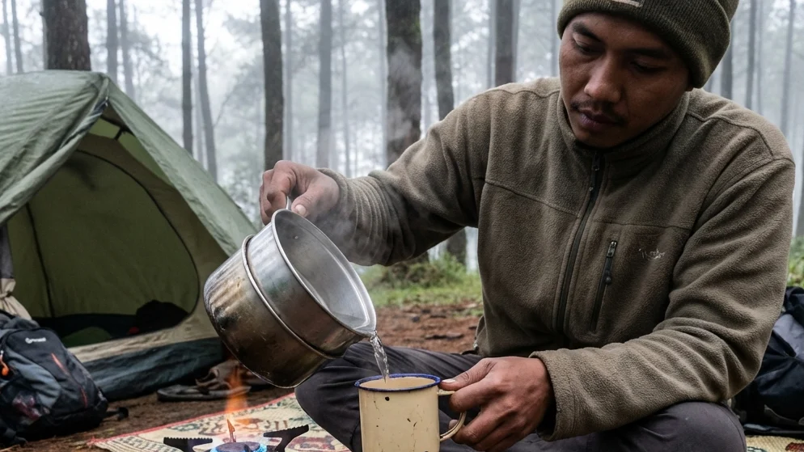

1. Pelarian Singkat dari Penatnya Rutinitas Perkotaan
Tinggal di kawasan perkotaan yang serba cepat seringkali menuntut kita untuk bekerja bagaikan mesin yang tak kenal lelah. Deru kendaraan, tumpukan beban pekerjaan, dan minimnya ruang terbuka hijau perlahan-lahan menyedot energi fisik serta kewarasan mental kita. Saat akhir pekan tiba, keinginan untuk melarikan diri dan mencari ketenangan batin (healing) menjadi sebuah keharusan biologis. Manusia diciptakan untuk sesekali kembali menyatu dengan tanah, meresapi keheningan hutan, dan menghirup udara yang belum terkontaminasi oleh emisi karbon.
Jika Anda sedang merencanakan pelarian yang mengembalikan energi positif tersebut, penelusuran mengenai Menikmati Ketenangan Alam di Camp Ground Malang: Solusi Praktis Sewa Lahan dan Peralatan Kemah adalah referensi yang paling Anda butuhkan saat ini. Artikel komprehensif ini akan menguliti secara mendalam mengapa kawasan pegunungan Malang Raya adalah rumah terbaik bagi para pencari ketenangan, serta bagaimana konsep menyewa lahan dan peralatan kemah (Comfort Camping) sukses menghapus stigma bahwa tidur di alam itu selalu melelahkan, merepotkan, dan mahal.
2. Mengapa Camp Ground Malang Menjadi Pilihan Tepat untuk Healing?
Jawa Timur memiliki banyak titik wisata, namun wilayah Malang Raya (khususnya Kota Batu) selalu menduduki peringkat teratas dalam daftar destinasi para wisatawan alam. Hal ini bukanlah sebuah kebetulan semata.
Kualitas Udara Bersih yang Menyegarkan Paru-paru
Keunggulan absolut yang tidak bisa dibantah dari kawasan Malang dan Batu adalah posisi geografisnya yang dikepung oleh pegunungan megah seperti Arjuno, Welirang, dan Panderman. Berada di ketinggian yang bervariasi antara 1.000 hingga 1.500 MDPL menjadikan kualitas udara di kawasan ini teramat bersih dan kaya akan oksigen. Suhu yang konsisten sejuk di siang hari dan amat dingin di malam hari memberikan terapi alami bagi tubuh yang terbiasa terpapar polutan. Tarikan napas Anda akan terasa jauh lebih ringan dan melegakan saat berada di camp ground pegunungan ini.
Panorama Alam Perbukitan dan Hutan Pinus yang Memukau
Selain udaranya yang memanjakan paru-paru, mata Anda akan dimanjakan oleh lukisan alam yang tiada duanya. Banyak lahan kemah di Malang yang didirikan tepat di bawah rindangnya tegakan hutan pinus tropis yang asri. Saat pagi, kabut tipis akan turun menyelimuti area tenda, menciptakan sebuah suasana misterius namun amat damai. Tidak jarang, Anda akan mendapati lokasi camp ground yang posisinya menghadap lurus ke hamparan lembah, menyuguhkan pemandangan tanpa batas dari ujung ufuk timur hingga gemerlapnya lampu perkotaan.
BACA JUGA (Eksplorasi Kemah):
3. Solusi Praktis Liburan Alam: Sewa Lahan dan Peralatan Kemah
Meskipun alam menawarkan sejuta keindahan, banyak masyarakat urban yang mundur teratur ketika membayangkan keribetan yang menyertai aktivitas camping. Namun, industri wisata telah berevolusi.
Tidak Perlu Repot Beli dan Rawat Peralatan Mahal
Untuk memiliki peralatan kemah standar keamanan gunung—seperti tenda berkapasitas besar, matras insulasi, sleeping bag polar, dan kompor portabel—Anda mungkin harus merogoh kocek hingga jutaan rupiah. Belum lagi proses perawatannya yang rumit; tenda yang tidak dijemur dengan benar akan berjamur dan rusak *coating* anti-airnya. Dengan memanfaatkan jasa sewa peralatan langsung di lokasi camp ground, Anda telah memangkas seluruh beban finansial dan beban perawatan tersebut. Anda cukup membayar biaya sewa (rate) harian yang nominalnya hanya ratusan ribu rupiah saja untuk mendapatkan kualitas tidur kelas premium.
Fleksibilitas Tinggi untuk Pemula dan Keluarga
Jika Anda adalah seorang pemula, atau keluarga muda yang membawa anak balita, belajar mendirikan kerangka tenda di tengah hembusan angin dingin bisa menjadi sebuah malapetaka yang merusak mood liburan. Konsep sewa tenda paket All-In memastikan fleksibilitas tertinggi bagi Anda. Pihak pengelola lapangan telah merakit tenda tersebut hingga kokoh berdiri sebelum Anda tiba. Anda secara harfiah hanya perlu datang, memarkir kendaraan, membawa pakaian ganti ke dalam tenda, dan langsung bersantai.
4. Menyatu dengan Alam Menggunakan Tenda Dome Klasik
Meski Anda tidak membawa peralatan sendiri, penyedia jasa sewa di lahan kemah Malang umumnya tetap menggunakan tenda tipe dome yang merupakan ikon legendaris dari aktivitas alam bebas.
Keunggulan Tenda Dome di Cuaca Pegunungan
Tenda dome berbentuk setengah bola ini tidak dipilih tanpa alasan. Secara struktural, bentuk aerodinamisnya amat kokoh dalam membelah dan menahan terpaan angin gunung dari berbagai sisi. Operator profesional akan menyewakan tenda dome berspesifikasi Double Layer (dua lapis kain). Hal ini sangat krusial agar uap panas dari pernapasan Anda bisa keluar melalui lapisan jaring (inner) tanpa kembali menjadi tetesan embun (*kondensasi*), sementara lapisan pelindung luar (flysheet) akan 100% menangkal turunnya hujan lebat.
Sensasi Otentik yang Tidak Didapatkan di Glamping Mewah
Meskipun saat ini banyak bangunan *resort glamping* berskala besar yang dilengkapi dinding kayu dan kasur *springbed*, menginap di dalam tenda dome tetap tidak kehilangan tuahnya. Ketika Anda tidur berlapiskan sleeping bag di dalam dome, jarak Anda dengan alam sangatlah intim. Anda bisa meresapi wangi tanah basah sehabis hujan dan mendengar dengan jernih nyanyian serangga hutan. Otentisitas inilah yang seringkali dirindukan oleh jiwa-jiwa petualang, sebuah kedekatan murni tanpa halangan dinding peradaban buatan.

Momen menyeduh minuman hangat atau meracik sarapan menggunakan panci nesting di depan tenda memberikan sebuah kedamaian batin dan melatih insting kemandirian di alam bebas. (Ilustrasi: Unsplash)5. Fasilitas Penunjang yang Membuat Camp Ground Semakin Nyaman
Perbedaan paling fundamental antara berkemah liar di gunung dan menyewa lahan di camp ground komersial terletak pada ketersediaan infrastruktur pendukungnya.
Toilet Bersih dan Akses Air Mengalir
Buruknya sanitasi adalah ketakutan terbesar wisatawan, khususnya kaum perempuan. Lahan kemah di Malang Raya yang dikelola secara profesional selalu memprioritaskan pembangunan blok-blok kamar mandi berdinding keramik permanen. Di sana, Anda akan menemukan kloset model duduk dengan sistem flushing yang higienis, keran air gunung yang mengalir jernih tiada henti, dan bahkan seringkali telah dilengkapi dengan mesin pemanas air mandi (water heater) layaknya fasilitas hotel.
Ketersediaan Colokan Listrik untuk Keamanan Digital
Kembali ke alam tidak berarti Anda harus mati gaya dan kehilangan akses komunikasi. Pihak pengelola lahan biasanya telah menarik kabel instalasi listrik yang terlindung aman dari hujan menuju ke setiap kapling tenda. Keberadaan stop kontak listrik ini amat sangat vital untuk mengisi daya (charging) telepon pintar Anda, menyalakan lampu hias penerangan tenda, hingga mengaktifkan alat pemanas untuk botol susu bayi Anda di malam hari.
6. Rekomendasi Lokasi: Batu Sunrise Camp Sebagai Opsi Terbaik
Jika Anda mencari lahan yang mampu mengkombinasikan keaslian alam dan jaminan kenyamanan fasilitas secara seimbang, maka Batu Sunrise Camp yang berlokasi di Kota Batu, Malang Raya, adalah rujukan paling brilian.
Layanan Sewa Tenda All-In yang Anti Ribet
Batu Sunrise Camp adalah pelopor utama wisata berkonsep Comfort Camping yang ramah kantong. Mereka menawarkan sistem sewa lapak (ground) beserta paket tenda utuh (All-In). Tenda double layer berukuran lapang, matras spons berketebalan ekstra, serta kantong tidur yang terjaga kebersihannya telah disediakan sepenuhnya. Lahan ini juga dirancang berkonsep Campervan Friendly, memungkinkan kendaraan mobil Anda terparkir hanya selangkah dari titik berdirinya tenda.
Pemandangan Golden Sunrise dan City Light Malang
Selain rindangnya pohon pinus tropis yang menjadi payung peneduh alami, orientasi geografis lahan ini adalah harta karun yang paling berharga. Tenda-tenda pengunjung diatur agar menghadap lurus menatap bibir lembah di arah timur. Akibatnya, Anda akan disuguhi panorama gemerlap lautan lampu kota (City Lights) Malang yang amat romantis pada malam hari. Puncaknya, di pagi buta, Anda cukup membuka pintu tenda untuk menyambut hangatnya fajar keemasan (Golden Sunrise) yang perlahan menembus tebalnya samudra kabut putih.
BACA JUGA (Tips Logistik & Persiapan):
7. Tips Cerdas Merencanakan Kemah Praktis di Akhir Pekan
Meski segala infrastruktur berat telah disediakan oleh operator camp ground, Anda tetap wajib melindungi diri sendiri (personal safety) dari ganasnya suhu alam pegunungan.
Menerapkan Sistem Pakaian Berlapis (Layering System)
Jangan meremehkan dinginnya kawasan Batu di malam hari yang bisa menembus belasan derajat Celcius. Jangan menggunakan pakaian berbahan denim atau jeans karena sulit kering jika terkena embun dan justru akan menyerap dingin. Terapkanlah 3-Layering System: mulailah dengan kaus dry-fit yang cepat kering, tumpuk dengan jaket fleece tebal penahan hawa panas tubuh, dan akhiri dengan cangkang luar berupa jaket parasut (windbreaker) untuk membentengi tulang Anda dari hembusan angin lembah. Pastikan sarung tangan dan kupluk (beanie) ikut terkemas di ransel Anda.
Membawa Logistik Makanan yang Ringkas dan Bergizi
Bawalah kompor gas portabel lipat (beserta gas kaleng) dan panci nesting serbaguna untuk memasak secara mandiri. Siapkan bahan logistik yang mudah dan cepat dimasak namun padat kalori, seperti mi instan, sosis ayam, telur, dan roti gandum. Menyeduh segelas jahe merah hangat atau kopi robusta di depan tenda adalah aktivitas yang wajib dilakukan untuk mengusir rasa beku di sepertiga malam.
8. Kesimpulan
Melepaskan diri dari racun stres perkotaan tidak selamanya menuntut Anda untuk menderita secara fisik. Berdasarkan penelusuran mendalam mengenai Menikmati Ketenangan Alam di Camp Ground Malang: Solusi Praktis Sewa Lahan dan Peralatan Kemah di atas, kita dapat menarik benang merah bahwa industri pariwisata luar ruang telah beradaptasi sempurna dengan kebutuhan masyarakat modern. Memanfaatkan layanan paket kemah All-In di destinasi andal seperti Batu Sunrise Camp membebaskan Anda dari belenggu mahalnya investasi pembelian tenda. Anda bisa menyatu dengan otentisitas hutan pinus, terpukau oleh Golden Sunrise, dan tertidur hangat dengan jaminan keamanan fasilitas toilet duduk serta colokan listrik yang memadai. Wujudkan wacana liburan Anda hari ini, amankan booking kapling tenda Anda, dan biarkan keajaiban alam pegunungan Kota Batu mengembalikan binar kebahagiaan di mata Anda dan keluarga.